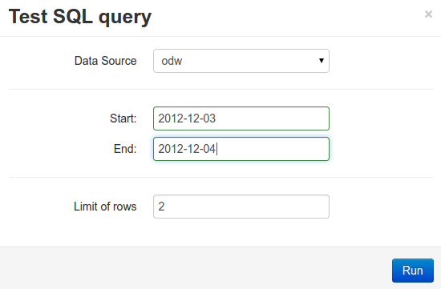

Previous
Get Started With...
Get Started With CloudML
Next
Working with Mod...
Working with Models
Importing the Data
Testing the query
Importing the Data
¶
Contents
Importing the Data
Testing the query
Testing the query
¶

Previous
Next